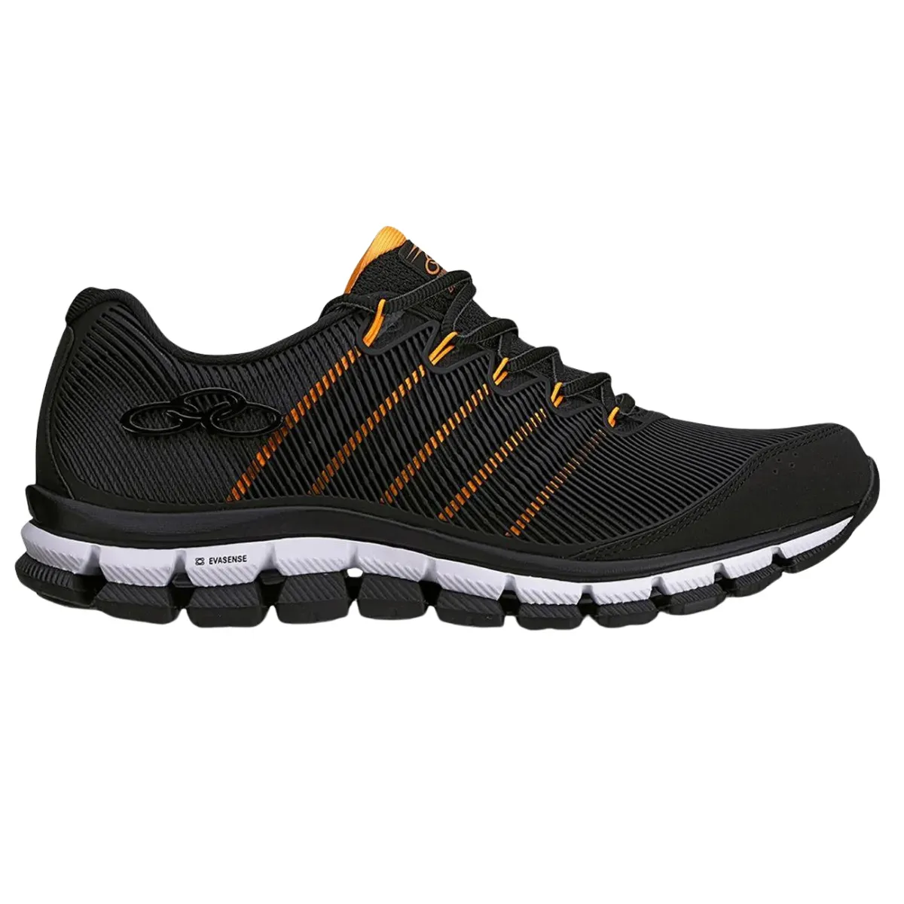

O PASSO ÚNICO conecta quem tem calçados, muletas e cadeiras de rodas para doar ou vender com quem precisa deles.
Conectamos doadores, instituições e beneficiários.
Doe ou venda o que você não usa mais, ou encontre o item que você precisa.
Fale direto com quem está doando pela própria plataforma.
Cada item encontra seu destino e uma vida ganha mobilidade.

Participação gratuita, do primeiro cadastro à entrega.